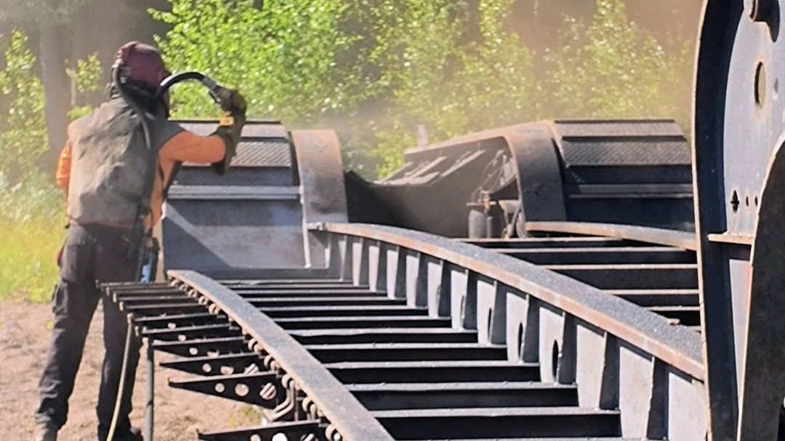

Mobile Sandblasting Service
Serving New York State and Surrounding Areas

What We Offer...
Mobile sandblasting is the process of bringing industrial-grade surface preparation equipment directly to the job site. Our expert service is ideal when being on-site can improve efficiency and reduce your equipment's downtime.
We provide premier on-site surface preparation services for a wide range of projects, but we specialize in heavy equipment, semi-truck frames, dump boxes, trailers, fuel trucks, and more.
When you can't get the equipment to us, our mobile blasting unit is fully equipped to come to you. But we not only bring the equipment, we bring experience. Every job is unique and we bring the know-how to get each job done right.
Testimonials
"Had a very good experience with K&P on a small project. Even though it wasn’t going to be a big payday Paul spent a decent amount of time advising us on the scope of the work and then exceeded our expectations."
- John C.
"Paul did an amazing job restoring the bed of my 2018 Toyota Tundra. He sandblasted it and also added a 2 part epoxy since the bed was horribly scratched up and started rusting in some parts. I would highly recommend this business. Definitely worth the drive. I will be recommending him for friends/family. Thank you again for the job well done."
- Mike Pollard
"I have used Paul at K&P Powdertec many times over the past 3 years. Phenomenal work and and very professional products. Always a happy customer!"
- Steven Zerphey
"Highly recommended, they do great work and will definitely be a repeat customer."
- Chris Easter
"great people, great quality and great experience! they will always get my business first"
- Bill Taylor
- Randy Conklin